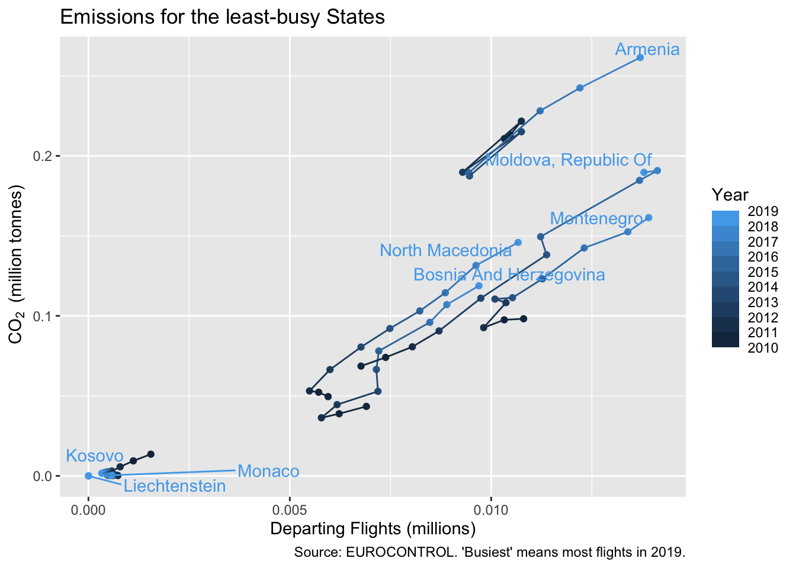
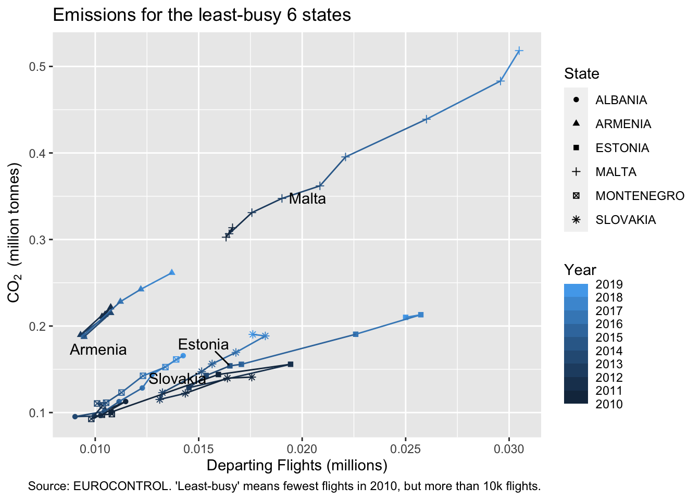
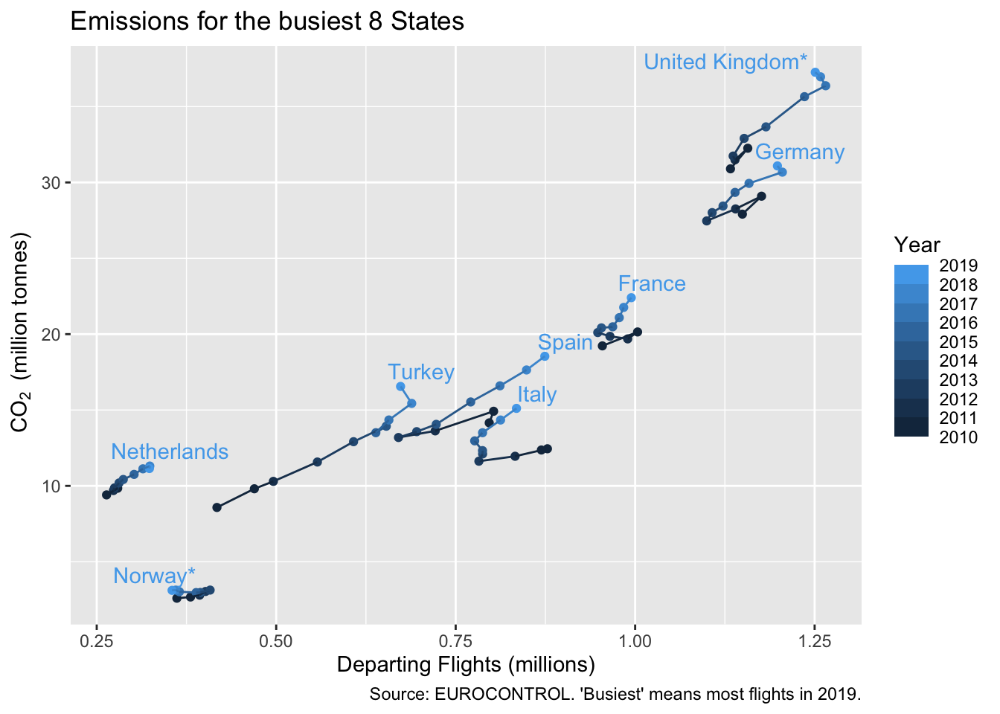
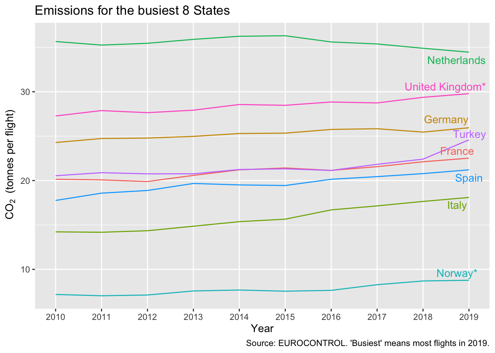

Chapter 4 Filtering a dataset and refining the CO2 graph
In this chapter we improve the CO2 emissions graph, en route learning how to filter observations from a dataset, to add new variables, and to use the pipe operator %>%.
| In this chapter |
|---|
filter(), ==, %in%, mutate(), slice_max(), %>%, geom_text_repel() |
On restarting your justlearning project, you should still have the aviation_co2 dataset in your environment, since RStudio saves these data and reloads on restart. If not, use the code in section @ref{loadco2} to load the Excel file from the data folder.
If you have closed RStudio and re-opened it, then you have a new session and need to reload packages, in this case library(tidyverse).
4.1 Sequences of functions
It’s time for a bit more syntax. We saw already that you can combine functions by making one the parameter to another. Or to put it another way, wrapping one around the other. As you combine more functions, this soon becomes hard to read, and you have to rely on the editor to help you spot whether you’ve enough brackets closed at the right point.
For that reason we use a different syntax, the ‘pipe’ operator %>% introduced by the magrittr package and adopted by the tidyverse. If you learn only one control-key combination learn shift-ctrl-M (also shift-command-M on Mac). This must be the fastest way to type ‘%>%!’ [Try it in your console.]
With a new line after each %>% and appropriate indenting (RStudio helps with that), you get code that looks like this. This says, fill a with what you get from dataset b after applying function fun1, then function fun2.
# which is clearer
# with a pipe?
a <- b %>%
fun1(p1) %>%
fun2(p2, p3)
# or without?
a <- fun2(fun1(b, p1), p2, p3)The pipe syntax works because fun1 actually has a parameter list that starts with the dataset to which it should be applied fun1(data, p1,...). So b %>% fun1(p1) is just another way of writing fun1(b, p1). Or, the other way around, you can use %>% whenever you have a function whose first parameter is the dataset to be operated on. It turns out that this is true for very many of them, and the tidyverse is designed that way.
4.2 Filtering datasets and Logical Tests
As is so often the case, in R there are several of ways to select rows from a dataframe or tibble. We’ll focus on the filter(data, test) function. For this we need to know how to construct a logical test.
There are three parts to this: the logic, the test functions and what’s being tested. Logic is mostly given by &, ! and |2 for ‘and,’ ‘not’ and ‘or,’ grouped with round brackets in the normal way. The test functions are almost as you might expect: >, <. However, in R you need to use == not = to test for equality. I suspect this creates the most common typo in R code! Check the documentation of dplyr::filter for a more complete list of test functions: in particular look out for %in%, which we will use shortly.
One really nice touch in filter() is in the third part: what’s being tested. One of the trickiest bits of learning R is knowing how, within a function, to refer to one or more variables of the dataset. In filter() you can just use the name of the variable; so no quotes needed around the name, and the code assumes it is a variable from the data parameter, so no need to use aviation_co2$.
In this example, we don’t push the result into a dataset (no a <-), so it gets printed out directly.
aviation_co2 %>%
filter(YEAR == 2018 & STATE_NAME %in% c("CZECHIA", "ALBANIA"))## # A tibble: 2 x 5
## YEAR STATE_NAME STATE_CODE Y_CO2_QTY_TONNES Y_TF
## <dbl> <chr> <chr> <dbl> <dbl>
## 1 2018 ALBANIA LA 143871. 12744
## 2 2018 CZECHIA LK 1381672. 90679Note that:
- the order of the rows is as in the original dataset, not at all influenced by the order of the naming of the States in the test
YEARandSTATE_NAMEare ‘bare’ strings, and are shorthand foraviation_co2$YEARetc- but “CZECHIA” is a value of a variable so needs to be a string in quotes
- and the test is case-sensitive.
4.3 Selecting the busiest States
In the previous chapter we selected the first-named States with head(). Now we do something more useful: selecting the top States by flights, using slice_max(). We need to define this a bit more clearly. ‘Top’ could mean in a particular year, or over the whole period (where flights have decreased as well as increased). We choose to mean ‘top by flights in 2019.’ This is partly out of habit (this is often the meaning) and partly because we need to introduce fewer new bits of R to implement it.
The code is like this. A final novelty is that we use pull() which, as its help-file says, does the same as $ (learned in the last chapter) but looks nicer in pipes.
top_states <- aviation_co2 %>%
filter(YEAR == 2019) %>% # top in year 2019
slice_max(Y_TF, n = 8) %>% # top 8
pull(STATE_NAME) slice_max() is a good example of how R changes with time. New versions of packages introduce minor or major changes. Sometimes a function is superseded (left to rot), other times it may be deprecated (you have some time to switch to a new version before it’s removed). The function top_n, which you might see lying around in legacy code, has been superseded by slice_max(). [Check out the documentation of top_n for some of the reasons.]
These changes mean that just updating to the latest version of the package is not always the best idea, because you might have to spend some time checking for changes. It also means that, when searching on the web for hints, snippets and answers, you need to look at the date of the answer. ggplot in particular has changed quite a bit, so answers more than 5 years old or so might not be that helpful.
4.4 CO2 graph for the top States
With top_states in place we can easily plot the data for the busiest States.
We update the title, and add a footnote (caption) to explain what’s going on. We could have created a new dataset, eg top_co2 <- aviation_co2 %>% filter(STATE_NAME %in% top_states), and then used this in the ggplot. But we only plan to use this filter once, so to avoid cluttering the environment with datasets, we filter ‘on the fly,’ within the ggplot statement. In this case, this is a matter of personal preference. If the datasets were a lot larger, and we intended analysing and transforming just the top States in further graphs, the decision might be different.
ggplot(aviation_co2 %>%
filter(STATE_NAME %in% top_states),
aes(Y_TF/1e6, Y_CO2_QTY_TONNES/1e6,
colour = STATE_NAME)) +
geom_point() +
geom_path() +
labs(x = "Departing Flights (millions)",
y = bquote(~CO[2]~" (million tonnes)"),
colour = "Year",
title = "Emissions for the busiest 8 States",
caption = "Source: EUROCONTROL. 'Busiest' means most flights in 2019.")
One advantage of filtering on the fly is that we can change on the fly. [Change the filter to the States not in the top 8. It takes one key press. Re-run the graph. Update the titles too.]
As an analyst, I really want to know which country is which. With just 8 States shown, maybe I can use symbols? At one level it’s quick to do. Just replace group = with shape =. [Try this.] ggplot complains that it doesn’t really like using more than 6 symbols, because it becomes hard for the reader to jump between legend and graph. We could roll with it and learn how to extend the pallette, but is there another solution.
We can separate States by colours. Again, quite quick: replace colour = YEAR, group = STATE_NAME with colour = STATE_NAME. [Try this.] The line means we can work out the ordering of the years easily, so losing the year isn’t a big issue here. But eight colours is also a lot to tell apart. Even without colour blindness, you might think they’re clear but when projected onto a screen or printed or on a tiny phone screen, perhaps not.
4.5 Labelling the CO2 graph
It’s relatively easy to follow a slightly different route: adding State names directly to the graph. This is done with geom_text added to the ggplot. We only want to label the point in 2019 rather than all years, so we create a new variable which is empty except in rows for the year 2019. mutate(a = ...) is the function for adding a variable ‘a’ to the dataset3. if_else() is how we give a value for only some years. Notice that, like the filter(), we can refer to other variables in aviation_co2 without inverted commas.
This time, we amend the aviation_co2 dataset itself, because we want to be able to use this in several places, not just in a single graph. The syntax a <- a %>% ... follows the same pattern as you saw earlier, but you’re overwriting the original dataset.
The geom_text() inherits all the aesthetics from the ggplot function, so it already knows where to find x and y coordinates, and what colour to use. We still need to tell geom_text() where to find the labels. This is also an aesthetic.
aviation_co2 <- aviation_co2 %>%
mutate(state_label = if_else(YEAR == 2019, STATE_NAME, ""))
ggplot(aviation_co2 %>%
filter(STATE_NAME %in% top_states),
aes(Y_TF/1e6, Y_CO2_QTY_TONNES/1e6,
colour = YEAR, group = STATE_NAME)) +
geom_point() +
geom_path() +
geom_text(aes(label = state_label)) +
labs(x = "Departing Flights (millions)",
y = bquote(~CO[2]~" (million tonnes)"),
colour = "Year",
title = "Emissions for the busiest 8 States",
caption = "Source: EUROCONTROL. 'Busiest' means most flights in 2019.")
This is close, but not quite good enough. The text is centred on the point, and this creates some ugly overlaps. There are lots of options in geom_text() to adjust the position, and you’ll find lots of examples on the web [Check the documentation for a start.]. So we could spend time adjusting the positions. But this is a first example of the rule: ‘surely someone has already come across this problem?’ Someone has indeed spent time to come up with good ways to deconflict and position labels on graphs. The package is called ggrepel, which you might need to install with install.packages("ggrepel"), and it provides a ‘drop in’ replacement for geom_text naturally called geom_text_repel. To avoid using library("ggrepel") when we’re just using one function, we use the double-colon syntax in the code.
The defaults for this function work pretty well in this particular case. But there are a couple of things I’d like to fix: the block capitals and the year legend. Title case would be nicer, so we convert the STATE_NAME using the stringr package function str_to_title(). stringr is already loaded as part of the tidyverse, and since most of its functions begin ‘str_’ it’s quite easy to start searching in the help pane for the right one [Try this.]. In this case state_label already exists and we overwrite it.
The other thing to improve is the year scale, which shows with meaningless decimals. We use a quick-ish fix, rather than the tidiest-possible solution. (see TBD) Scales, whether the axes or colours, are controlled by ggplot functions starting scales_ in this case scales_colour_steps() gets us a scale that shows the individual years. This is a ‘dirty’ solution in the sense that, if the data for 2020 get included, you might need to tweak the code; but then, we’ve hard-coded 2019 in a number of places, so this is dirty elsewhere. We’ll see cleaner options later (TBD).
aviation_co2 <- aviation_co2 %>%
mutate(state_label = if_else(YEAR == 2019, str_to_title(STATE_NAME), ""))
ggplot(aviation_co2 %>%
filter(STATE_NAME %in% top_states),
aes(Y_TF/1e6, Y_CO2_QTY_TONNES/1e6,
colour = YEAR, group = STATE_NAME)) +
geom_point() +
geom_path() +
ggrepel::geom_text_repel(aes(label = state_label)) +
scale_colour_steps(n.breaks = 8, show.limits = TRUE) +
labs(x = "Departing Flights (millions)",
y = bquote(~CO[2]~" (million tonnes)"),
colour = "Year",
title = "Emissions for the busiest 8 States",
caption = "Source: EUROCONTROL. 'Busiest' means most flights in 2019.")
4.6 What does the graph say about CO2?
Longer-haul flights use heavier aircraft and therefore the proportion of long-haul flights in your national mix is a major influence on CO2 per flight. For example, the Netherlands has more CO2 per flight than Norway: Norway has a significant domestic (so short-range) market, which the Netherlands does not. These have been relatively stable.
The UK also has a proportionally larger long-haul market. And a decline in its domestic market has led to quite a rapid increase in CO2 per flight in recent years.
So, the graph helps to build a story: though we needed some supporting information to provide some of the explanation. It has also become clear that we’re interested in CO2 per flight. See the exercises for a graph on that more directly.
4.7 What’s gone wrong?
It’s inevitable that you will type = in tests where you mean ==. Some functions have friendly messages, since this is so common. Others less so.
Watch that case! We are using the function filter(), not the function Filter() which is something else entirely.
if_else is a fussy version of the base function ifelse, that we use here to maximise use of tidyverse functions. If it warns you that the ‘false’ must be something, then it has your long-term interests at heart. It just means that it’s a different type to the ‘true.’ Compare ifelse(1<2,"true",NA) and if_else(1<2,"true",NA) where NA is the code for missing.
It pays to looks closely at the graph and try to explain what you see. In fact, it was only once I’d tidied the colours up that I noticed that they were not in order along the line. I had used geom_line (join in x-axis order) in place of geom_path (join in data order). So story-telling can help debugging too. Also, it pays to read the help file, even if you think you know how the function works!
4.8 Exercises
4.8.1 Questions
- Adapt the graph to show the smallest 8 States instead. (Hints: What’s the most likely counterpart to
slice_max? Closely-related functions are often to be found in the same help file.) - Adapt the graph to show year on the x-axis and CO2/flight on the y-axis. (Hints: Mostly changing the first
aes()and deleting some elements. For a pretty graph you might google how to hide the legend “ggplot hide legend,” and how to set the breaks on the x-axis.)
4.8.2 Answers
geom_text_repeluses call-out lines when it can’t get the text close. You could experiment with making these a less confusing colour. You might also drop the ‘millions.’
small_states <- aviation_co2 %>%
filter(YEAR == 2019) %>% # in year 2019
slice_min(Y_TF, n = 8) %>% # smallest 8
pull(STATE_NAME)
ggplot(aviation_co2 %>%
filter(STATE_NAME %in% small_states),
aes(Y_TF/1e6, Y_CO2_QTY_TONNES/1e6,
colour = YEAR, group = STATE_NAME)) +
geom_point() +
geom_path() +
ggrepel::geom_text_repel(aes(label = state_label)) +
scale_colour_steps(n.breaks = 8, show.limits = TRUE) +
labs(x = "Departing Flights (millions)",
y = bquote(~CO[2]~" (million tonnes)"),
colour = "Year",
title = "Emissions for the least-busy States",
caption = "Source: EUROCONTROL. 'Busiest' means most flights in 2019.")- A pedant might say this shouldn’t be a line chart, but here’s one possibility.
ggplot(aviation_co2 %>%
filter(STATE_NAME %in% top_states),
aes(YEAR, Y_CO2_QTY_TONNES/Y_TF,
colour = STATE_NAME)) +
geom_path() + # I decided the points looked too heavy
ggrepel::geom_text_repel(aes(label = state_label)) +
theme(legend.position = "none") + # turn off legend
scale_x_continuous(breaks = 2010:2019, minor_breaks = NULL) + # control the breaks
labs(x = "Year",
y = bquote(~CO[2]~" (tonnes per flight)"),
title = "Emissions for the busiest 8 States",
caption = "Source: EUROCONTROL. 'Busiest' means most flights in 2019.")